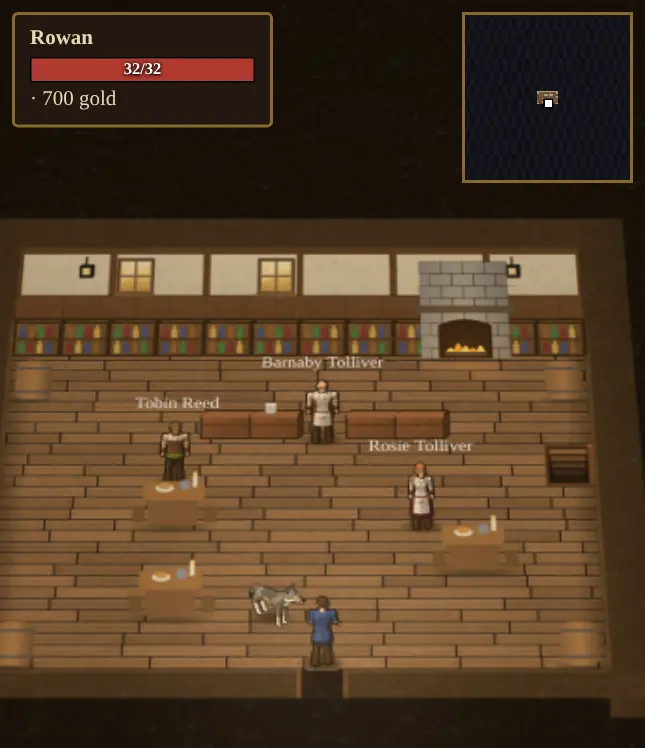
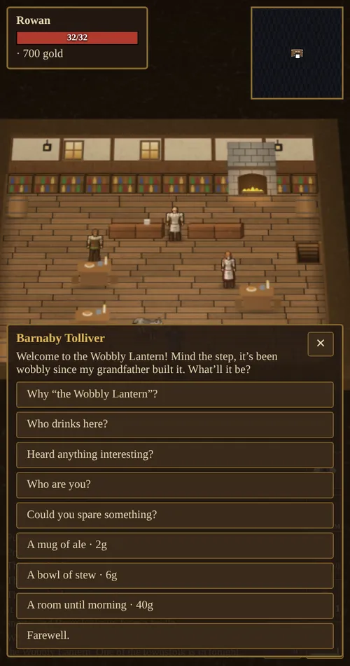
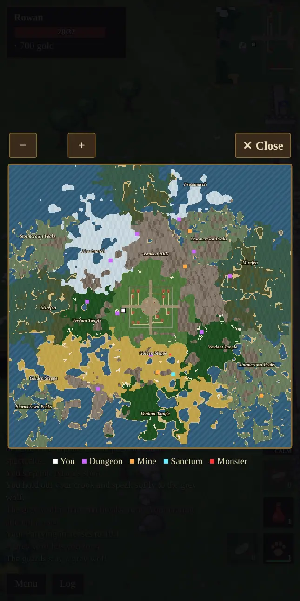

The World
An island kingdom: a walled town at its heart, regions of wild country all around it, herds to hunt, and eleven dungeons and four mines to explore.
The town
Aethelgard's town sits at the center of the island inside a stone wall with towers and four gates, north, south, east and west, where the roads lead out. Guards watch from the walls, and monsters never come in through the gates.
Inside are the fountain square, cottages (tap one to hear who lives there), market stalls on the south road, a well, lamps along the roads, and a number of shops and halls. Tap a door to go inside.


| Place | Who is there | What you can do |
|---|---|---|
| Temple of the Light | Brother Aldric, Sister Elara | Free healing, a 10-minute blessing for 50g, donations for reputation. |
| Mara's shop | Mara the Merchant | Buy gear, potions, tools and ingredients; sell gear, loot, fish and food; Cooking lessons. |
| Garrick's forge | Garrick Ironhand | Enhance, repair, smelt and forge; lessons in Blacksmithing, Mining and Arms Lore. |
| Training Hall | Captain Vane, Sylvie Wren, Mick Nimblefingers | Lessons in fighting, archery and stealth. |
| Mage tent | Archmage Ilvara | Reagents, magic lessons and the enchanter's table. Appears after your first spell. |
| Tailor's shop | Tamsin the Tailor | Spinning wheel, loom, tanning tub and sewing table; materials; Tailoring lessons. |
| Alchemist's shop | Corvin the Alchemist | Cauldron; flasks and herbs; Alchemy lessons. |
| The stable | Bram Hollis | The shepherd's crook, bandages, a saddled horse, your tamed animals. See Animals & Taming. |
| The Wobbly Lantern | Barnaby and Rosie Tolliver | Ale, stew and a room for the night. |
| Fountain and storage chest | Pip and Old Wynn nearby | Safe storage for gear, gold and materials. |
The Wobbly Lantern


The town's tavern has a sign that has hung crooked for sixty years. Barnaby Tolliver pours behind the bar and his daughter Rosie carries the plates.
| Service | Price | Effect |
|---|---|---|
| A mug of ale | 2g | A little health back. |
| A bowl of stew | 6g | Restores 40% of your health. |
| A room until morning | 40g | You sleep through to dawn and wake with full health and mana, plus the benefits of both a tent and a bedroll for 10 minutes: better armor, aim and damage, and faster skill gains. |
A staircase behind the tables leads down to the cellar, where the ale is kept cool.
A day in town
Townsfolk keep a daily routine, so the town looks different through the 16-minute day.
- Mornings: Greta the cook wanders between the market and the shop. Edda sets up her market stall, while Nessa the fisher comes back from the east gate to run hers.
- Working hours: Tobin the farmer, Rook and Jory leave through the gates to work and come back in the afternoon, and Jory then takes a turn at a market stall. Hilda minds her bread stall. Odo the scribe sits in the temple in the morning and the hall in the afternoon. Agnes keeps her bench by the temple.
- Children: Lily and Pip play and wander between the fountain, the market, the well and the stable.
- Dawn and dusk: Finn walks the roads lighting and putting out the lamps.
- Evening: Tobin, Rook, Jory and Finn drift into the Wobbly Lantern, and the tavern fills with talk.
If you cannot find someone, check the clock. Most people are at home outside their working hours.
Regions

The world is about three times the size it used to be, and it is made of regions, each with its own ground, trees, creatures and herbs. The Meadowlands always surround the town. Every new world then picks four to six of the eight wilder regions and lays them out around it, so no two worlds look the same. Crossing into a new region shows its name, and the full map names every region.
| Region | What it is like | What lives there |
|---|---|---|
| The Meadowlands | Soft green fields around the town. | Rats and orcs, sheep, cows, bulls, goats and deer; silverleaf, mandrake and redcaps; cotton. |
| The Greenwood | Old trees crowd close and the light turns green. | Deer; redcaps and mandrake; cotton; treants deep in the far woods. |
| The Frostmarch | Snow, sharp crags and cold. | Deer and goats; frost lilies and sulphur. |
| The Mirefen | Squelching ground, reeds and still, dark water. | Lizardmen and ratmen; deer, cows and goats; bloodmoss and redcaps. |
| The Sunscar Wastes | Heat shimmering over sand and cacti. | Skeletons and skeleton archers; goats; sulphur. |
| The Verdant Tangle | Vines and giant leaves in thick, warm air. | Lizardmen and ratmen; deer; bloodmoss and mandrake; cotton. |
| The Golden Steppe | Tall golden grass and flat-topped acacias. | Cattle and bulls, deer and goats; silverleaf; cotton. |
| The Broken Hills | Broken stone and thorny scrub. | Harpies and, far out, ogres; goats and sheep; sulphur. |
| The Stormcrown Peaks | Rock rising in sharp, snowy shards. | Harpies and ogres; goats; frost lilies and sulphur. |
Danger grows with distance from town. Near the walls are giant rats and orcs, then orcs and skeletons, then skeletons, ghouls and wraiths at the edges, with each region adding its own creatures. Night brings stronger versions of familiar creatures. Birds and bats fly overhead, and a bow or Lightning can bring them down, or a crook can bring them to you (see Animals & Taming).
A short walk outside the walls stands a ruined watchtower, its squared stones broken off at different heights. Unlike the rounded boulders lying about, it can be quarried for ore.
Wildlife
Herds graze across the land, different in every region. They mind their own business. Most bolt when hurt, and the rest of their herd runs too, but goats and bulls fight back. With war mode off, tapping an animal just looks at it (or shears a woolly sheep if you carry shears, or begins taming if you hold a crook). Hunt them with war mode on.
| Animal | Health | Temper | Drops |
|---|---|---|---|
| Sheep | 14 | Flees | 1–2 hides, 1–2 wool, 1–2 raw meat. Shear it instead for 2–4 wool. |
| Goat | 22 | Butts back | 1–2 hides, 1–2 raw meat |
| Deer | 22 | Bolts fast | 1–2 hides, 2–3 raw meat |
| Cow | 36 | Flees | 2–3 hides, 3–4 raw meat |
| Bull | 72 | Charges back, hard | 2–3 hides, 3–5 raw meat |
| Raven | — | Flies | 1 bird meat |
Dungeons
Dungeon entrances show as purple marks on the minimap. Inside, the darkness lifts as you explore. Monsters and a treasure chest wait at the far end, guarded by the boss.
- Killing a dungeon's boss leaves its hoard for you. The lair restocks about 30 minutes later.
- Each time you defeat a dungeon's boss, that dungeon comes back 35% tougher and richer.
- Monsters you kill inside come back after a minute or two.
- Skills rise 1.5× faster underground.
- Every level hides one chest, set to what your Detect Hidden can find when you go down. You sense it when you come close, and the finer the find, the finer the loot.
- Dying below holds the dungeon or mine as it is for at least ten minutes, so you can go back for your things.
- Dungeons are small, so their maps always open fully zoomed out.
| Dungeon | Tier | Monsters | Boss |
|---|---|---|---|
| The Orc Warren | 1 | Orcs, ratmen | Gnarlfang the Warlord |
| The Ratmen Warrens | 1 | Ratmen, giant rats | Skrix the Rat King |
| The Sunken Grotto | 1 | Lizardmen | Zhar'ak the Scalelord |
| The Forgotten Crypt | 2 | Skeletons, skeleton archers, ghouls | Lich Morthal |
| The Elderwood Hollow | 2 | Treants, orcs | Old Thornroot the Elder |
| The Ogre Hold | 2 | Ogres, orcs | Grumthar Skullcrusher |
| The Aerie of Storms | 2 | Harpies, gargoyles | Shrieka, Queen of the Gale |
| The Elemental Sanctum | 2 | Fire, air, water and earth elementals | Veyra, the Elemental Summoner |
| Nightmare Hollow | 3 | Nightmares, wraiths | Cinderhoof, King of Nightmares |
| The Dragon's Lair | 3 | Ghouls, wraiths | Vyrmgor the Drake |
| The Infernal Pit | 3 | Demons, devils | Azmodrax the Pit Lord |
Higher tiers lie further from town, and each dungeon favors country that suits it: the Sunken Grotto in swamp or jungle, the Elderwood Hollow in the Greenwood, the Aerie of Storms in the peaks, the Dragon's Lair in the desert, and so on. Tier 1 is right for a new hero with a longsword and potions. Tier 3 needs your best gear.
Mines
Four mines, the Ironvein Mine, the Deepdelve, the Hollow Shaft and the Sunken Drift, are dug into the rock. They are full of ore veins, with orcs, rats and skeletons, but no boss or chest. A mine refills about eight minutes after you leave.
Bestiary
| Creature | Health | Found |
|---|---|---|
| Giant rat | 8 | Near town, rat warrens |
| Sheep | 14 | Meadows, hills and peaks |
| Deer | 22 | Woods, jungles, swamps and the north |
| Goat | 22 | Almost everywhere |
| Orc archer | 24 | Orc lands |
| Bloodmoon rat | 26 | At night |
| Orc | 26 | Wilds, Orc Warren, mines |
| Ratman skulker | 26 | With ratmen |
| Ratman | 28 | Ratmen Warrens, Orc Warren |
| Ratman plague-healer | 28 | With ratmen |
| Orc cutthroat | 30 | With orcs |
| Orc shaman | 34 | With orcs |
| Skeleton archer | 34 | Crypt |
| Cow | 36 | Meadows, steppe and swamp |
| Lizardman | 40 | Sunken Grotto |
| Lizardman stalker | 40 | With lizardmen |
| Lizardman shaman | 42 | With lizardmen |
| Skeleton | 42 | Wilds, Crypt, mines |
| Bone stalker | 44 | With skeletons |
| Harpy archer | 44 | Aerie |
| Bone priest | 46 | With skeletons |
| Harpy | 54 | Aerie of Storms |
| Ghoul | 60 | Far wilds, Crypt, Dragon's Lair |
| Nightblood orc | 70 | At night |
| Bull | 72 | Meadows and steppe |
| Wraith | 90 | Edges of the world, Nightmare Hollow, Dragon's Lair |
| Air elemental | 95 | Elemental Sanctum |
| Gargoyle | 98 | Aerie of Storms |
| Demon | 100 | Infernal Pit |
| Revenant | 105 | At night |
| Fire elemental | 110 | Elemental Sanctum |
| Ogre | 118 | Ogre Hold |
| Nightmare | 122 | Nightmare Hollow |
| Water elemental | 125 | Elemental Sanctum (heals) |
| Devil | 142 | Infernal Pit |
| Treant | 155 | Elderwood Hollow |
| Earth elemental | 210 | Elemental Sanctum |
Bosses
| Boss | Health | Lair |
|---|---|---|
| Gnarlfang the Warlord | 170 | Orc Warren |
| Skrix the Rat King | 200 | Ratmen Warrens |
| Zhar'ak the Scalelord | 240 | Sunken Grotto |
| Lich Morthal | 330 | Forgotten Crypt |
| Shrieka, Queen of the Gale | 360 | Aerie of Storms |
| Veyra, the Elemental Summoner | 430 | Elemental Sanctum |
| Grumthar Skullcrusher | 430 | Ogre Hold |
| Old Thornroot the Elder | 490 | Elderwood Hollow |
| Vyrmgor the Drake | 620 | Dragon's Lair |
| Cinderhoof, King of Nightmares | 720 | Nightmare Hollow |
| Azmodrax the Pit Lord | 780 | Infernal Pit |
| Queen Vermissa, the Plague Mother | 1,100 | World boss |
| Malgrath the Hollow King | 1,300 | World boss |
| Gorgrim Skullsplitter, Orc Overlord | 1,400 | World boss |
| Ignarax the Ashen Wyrm | 1,500 | World boss |
Health shown is for a dungeon's first visit. It rises 35% each time you clear that dungeon.
Next: Reputation.